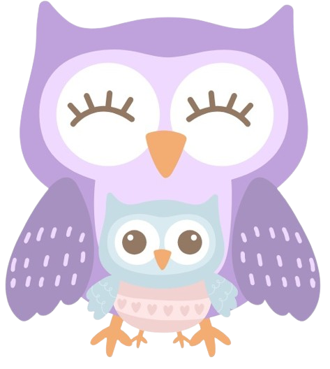
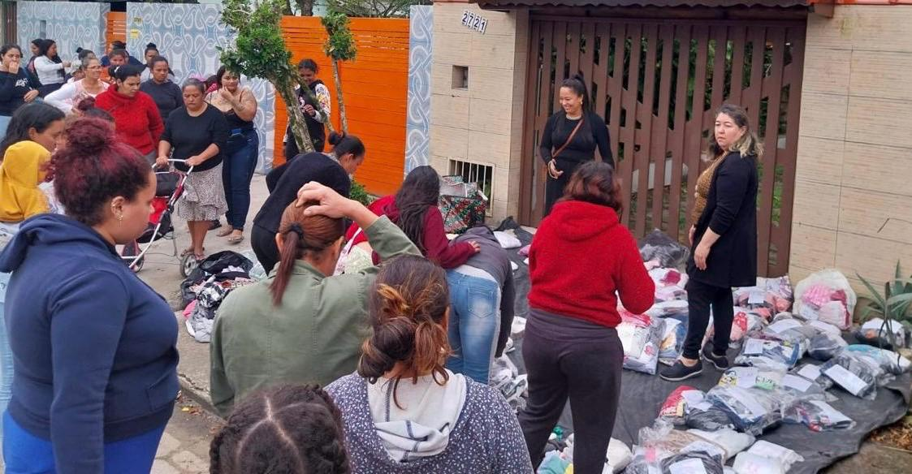
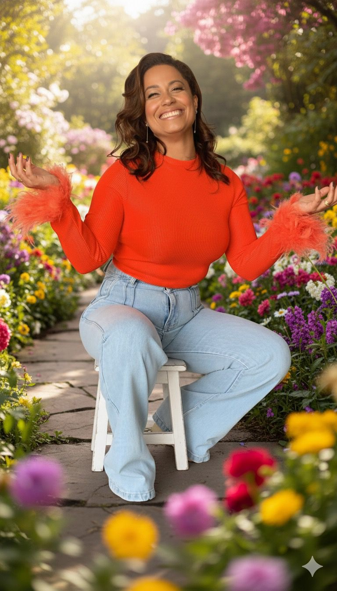
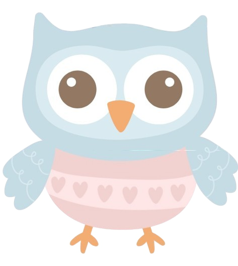
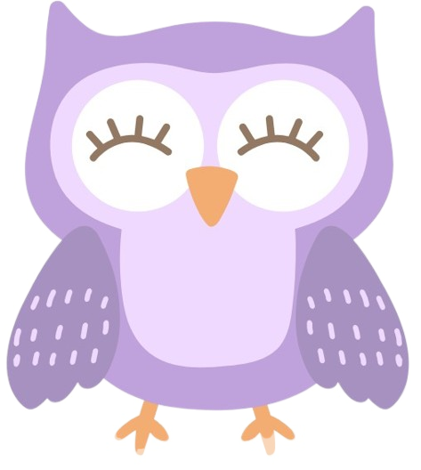
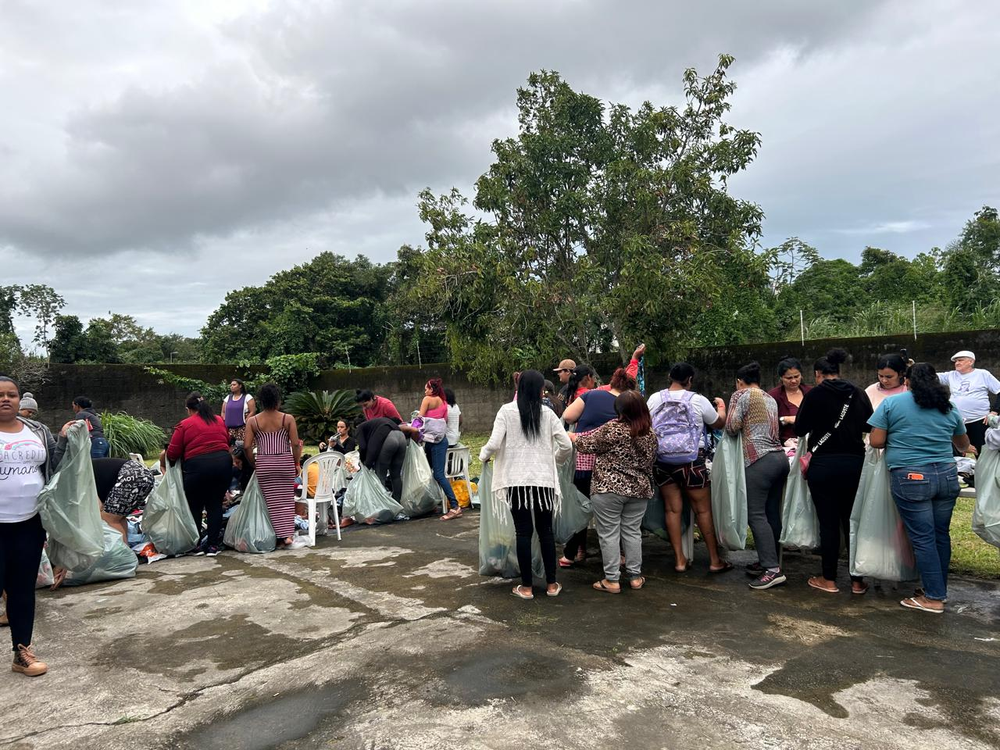
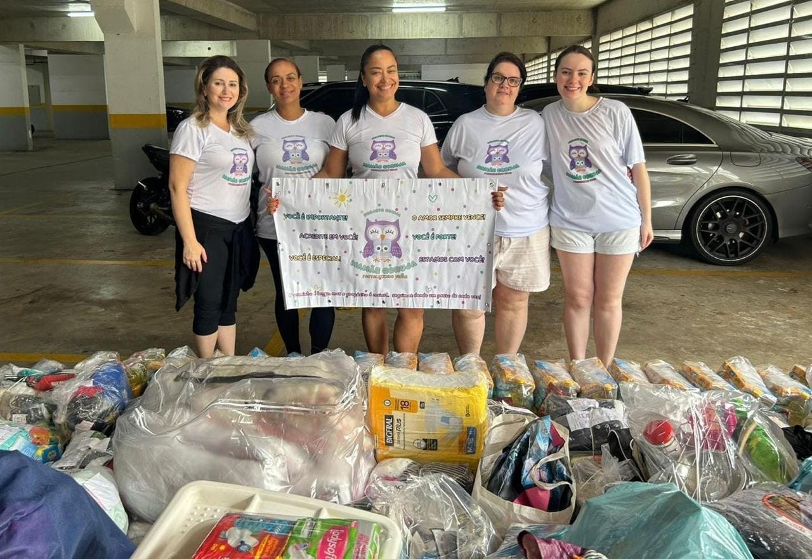
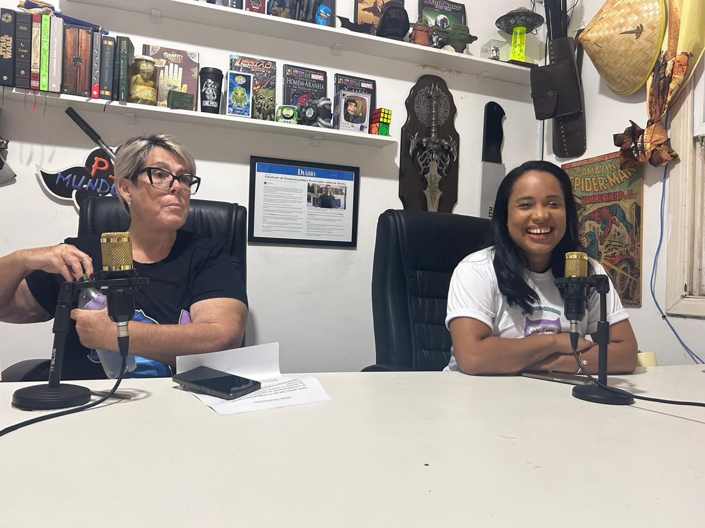
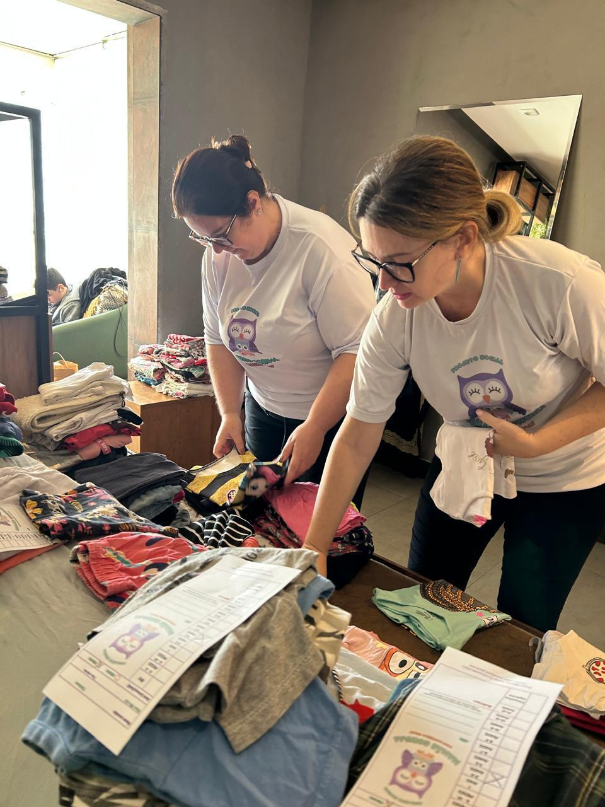

1000+
Doações realizadas
Transformando vidas através do amor, cuidado e apoio às famílias em situação de vulnerabilidade. Juntos, formamos uma legião do bem e contribuímos para amenizar o sofrimento da sociedade.

Doações realizadas
Pessoas atendidas
Preencha o formulário abaixo para participar do nosso projeto e fazer a diferença na vida de mães solos e suas famílias.
A sua compaixão é o que muda vidas, doe agora mesmo atráves das chaves PIX abaixo:
Chave: instituto.mamaecoruja@yahoo.com
O Instituto mamãe coruja nasceu do sonho de criar um mundo mais colorido, onde as mães solos tivessem acesso ao amor, cuidado e oportunidade que merecem.
Trabalhamos incansavelmente para fortalecer vidas e as ajudamos seguir buscando novos sonhos.
Oferecemos amor incondicional e cuidado especializado para cada família que atendemos.
Garantimos um ambiente seguro, carinho e acolhimento as mães solos.
Fortalecemos os laços comunitários e promovemos a união entre as famílias.
Trabalhamos com foco na transformação social e no desenvolvimento humano integral.
O Instituto Mamãe Coruja é uma organização sem fins lucrativos que visa apoiar Mães solos em situação de vulnerabilidade social. Acreditamos que o amparo, seja material ou emocional, pode ser o impulso para nossos recomeços.
Nossa equipe é formada por voluntários dedicados que trabalham com amor, comprometimento e muita responsabilidade social. Todos que se unem ao instituto, são mãos estendidas com o mesmo objetivo de fortalecer vidas!

Conheça a história inspiradora por trás do Instituto Mamãe Coruja

"Siga sempre fazendo o seu melhor, para que o melhor possa acontecer."
Casada há 26 anos com Mário — advogado, professor e gestor — é mãe de duas filhas, Beatriz e Maria Luiza. Bacharel em Direito e pós-graduada em Constelação Familiar, construiu uma trajetória marcada pela empatia e dedicação ao próximo. Desde a infância, inspirada pelo exemplo dos pais, aprendeu o valor de semear o amor e estender as mãos, atuando como voluntária em orfanatos, ONGs e ações comunitárias voltadas à assistência de famílias em vulnerabilidade.
Ao longo dos anos, desenvolveu metodologias de cuidado integral e atendimento humanizado, sempre priorizando o desenvolvimento emocional e o respeito à individualidade de cada ser. Hoje, reúne uma ampla bagagem de experiências sociais e segue firme em sua missão de unir pessoas com o mesmo propósito: servir, acolher e transformar vidas com amor, empatia e excelência.
Anos de Experiência
Projetos Realizados
Fundação do Instituto
Sua generosidade pode transformar vidas. Cada doação gera uma reação na vida de alguém.

Faça uma doação pontual e ajude uma família hoje mesmo.
R$ 50
Torne-se um padrinho e transforme vidas.
R$ 100Contribua com um valor personalizado para o nosso instituto.
Valor livreAlimenta uma criança
Alimenta mãe e filho
Alimenta uma família
Momentos especiais que capturam a essência do nosso trabalho e o nosso servir ao próximo com excelência.



Cada foto conta uma história de amor e dedicação
Fortalecendo laços e construindo relacionamentos
Momentos que marcam vidas para sempre
Junte-se à nossa família de voluntários e faça parte da transformação de vidas. Sua dedicação e amor podem fazer toda a diferença.
Nos ajude retirando doações nos pontos de coleta.
Horário livreTriagem e organização das doações recebidas.
Horário livreCompartilhe suas experiências e habilidades conosco.
Horário livreSua dedicação pode mudar uma vida.
Conecte-se com pessoas que compartilham os mesmos valores.
Aprenda novas competências enquanto ajuda o próximo.
